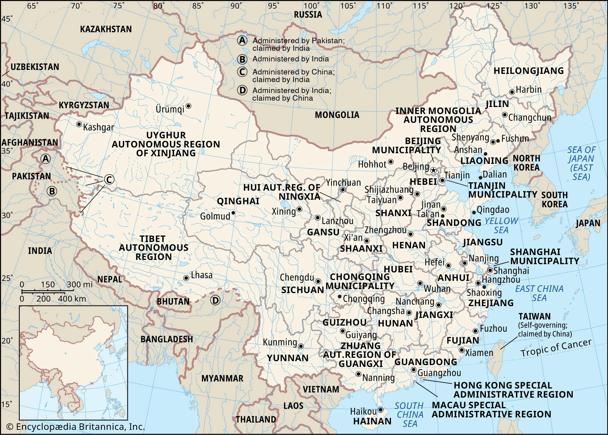

Lab 01 · September 2026
Give this lab a real title
The question：Where were cholera deaths concentrated in Soho, London, in 1854, and how does changing the heat map bandwidth affect the apparent relationship between the cholera hotspot and public water pumps?
One sentence. It must be answerable, and it must have a "where" in it. Write it as a question, with a question mark.
The data
I used the Soho cholera teaching web map provided for this lab. The map includes a historical scan of John Snow’s 1854 cholera map, a layer of public water pumps, a layer of cholera cases by address, and a Soho reference layer. The cholera case dataset contains 322 geocoded addresses. The Num_Cases field records the number of cholera deaths associated with each address. The public water pump layer contains 12 pumps. The data also have an important historical naming issue. The pump closest to the hotspot is labelled 43 Broadwick Street, but the street was called Broad Street in 1854 and was renamed Broadwick Street in 1936. This means that the map combines historical spatial information with a modern street name. Source: Esri, Soho cholera teaching web map, based on John Snow’s 1854 cholera map and related cholera-address data. One thing the dataset does not show is which water pump each individual person actually used. The map therefore allows me to compare the spatial locations of deaths and pumps, but not individual water-use behavior.
The method
I used ArcGIS Online Map Viewer to create a weighted Kernel Density Estimation (KDE) heat map. I used Num_Cases as the weighting field. This means that addresses with more recorded deaths contribute more strongly to the density surface. The result is therefore a map of estimated cholera-death concentration rather than simply a map showing where the 322 addresses are located. The KDE bandwidth was controlled using ArcGIS's Area of influence slider. The interface does not show the numerical bandwidth value, so I tested three relative settings: Far left: smallest area of influence Middle: medium area of influence Far right: largest area of influence I kept the map extent the same for all three settings so that I could compare the results consistently. For each setting, I recorded: how many of the 12 public water pumps fell within the hottest colour band; whether 43 Broadwick Street was the pump closest to the centre of the hotspot. I used the three settings as a sensitivity check rather than assuming that one bandwidth was automatically correct.

What I found
Plain language. What does the map support? Write it so someone outside this course could follow it.
What this does not show
The honest part. What the map cannot support, what you had to assume, and what would change your answer. If your unit of analysis could have been drawn differently, say so here.
AI use: AI-assisted for [what], using [which tool]. I verified [how]. If you did not use AI, write "No AI tools were used for this entry."